Cap. 13 Funções Orgânicas Oxigenadas e Nitrogenadas
Funções oxigenadas têm o oxigênio como heteroátomo principal. A presença e a posição do oxigênio na cadeia define o grupo funcional — e portanto as propriedades físicas e químicas do composto.
| Função | Grupo Funcional | Sufixo IUPAC | Exemplo |
|---|---|---|---|
| Álcool | R–OH | -ol | Etanol (CH₃CH₂OH) |
| Fenol | Ar–OH | fenol / -ol | Fenol (C₆H₅OH) |
| Éter | R–O–R' | -oxi-…-ano | Éter dietílico (CH₃CH₂OCH₂CH₃) |
| Aldeído | R–CHO | -al | Etanal (CH₃CHO) |
| Cetona | R–CO–R' | -ona | Propanona (acetona) |
| Ácido Carboxílico | R–COOH | ácido …-oico | Ácido etanoico (acético) |
| Éster | R–COO–R' | …-oato de …-ila | Etanoato de etila |
Álcoois
O grupo –OH está ligado a um carbono saturado (sp³). Classificam-se conforme o número de carbonos ligados ao carbono que carrega o OH:
- 1º grau — carbono funcional ligado a 1 outro C (ex.: etanol)
- 2º grau — carbono funcional ligado a 2 outros C (ex.: propan-2-ol / isopropanol)
- 3º grau — carbono funcional ligado a 3 outros C (ex.: 2-metilpropan-2-ol)
Éteres
Um átomo de oxigênio ligado a dois radicais orgânicos: R–O–R'. A nomenclatura IUPAC usa a forma [menor cadeia]-oxi-[maior cadeia]. Ex.: metoxietano (CH₃–O–CH₂CH₃).
Aldeídos e Cetonas — Grupo Carbonila (C=O)
Ambos possuem o grupo carbonila (C=O). A diferença está na posição:
- Aldeído: carbonila na extremidade da cadeia (carbono 1). Pelo menos um H ligado ao carbono carbonílico. Sufixo -al.
- Cetona: carbonila em posição intermediária (entre dois carbonos). Sufixo -ona.
Ácidos Carboxílicos
Grupo –COOH (carboxila = carbonila + hidroxila). São ácidos fracos em solução aquosa. Nomenclatura: ácido [cadeia]-oico. Exemplos comuns: ácido fórmico (metanoico), ácido acético (etanoico), ácido cítrico.
Ésteres
Formados pela reação de um ácido carboxílico com um álcool (esterificação), liberando H₂O. Grupo: –COO–. Nomenclatura: [ácido]-oato de [álcool]-ila.
Funções nitrogenadas têm o nitrogênio como heteroátomo. Derivam, conceitualmente, da amônia (NH₃) por substituição dos H por radicais orgânicos.
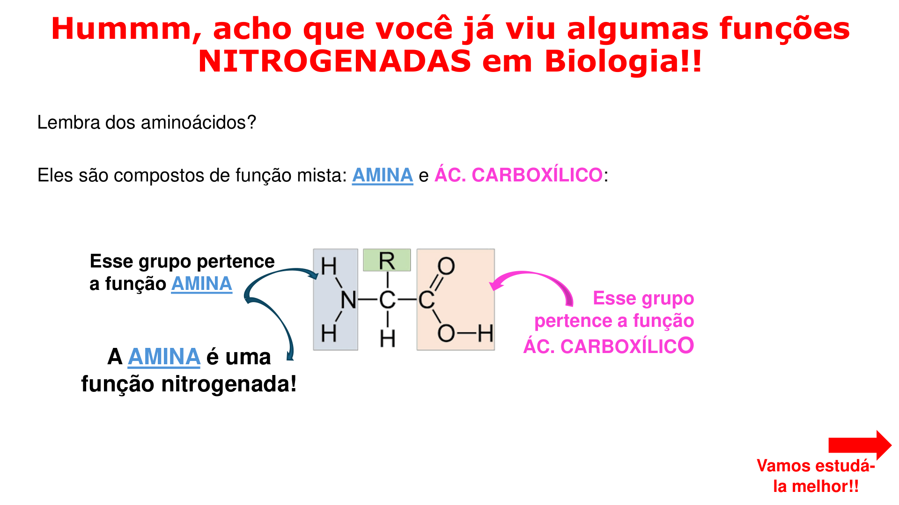
| Função | Grupo Funcional | Classificação / Nota |
|---|---|---|
| Amina Primária | R–NH₂ | 1 radical orgânico ligado ao N |
| Amina Secundária | R–NH–R' | 2 radicais ligados ao N |
| Amina Terciária | R–N(R')–R'' | 3 radicais ligados ao N, nenhum H |
| Amida | R–CO–NH₂ | Carbonila + N; ligação peptídica nas proteínas |
| Imina | R₂C=NH | Dupla ligação C=N; base de Schiff |
Aminas
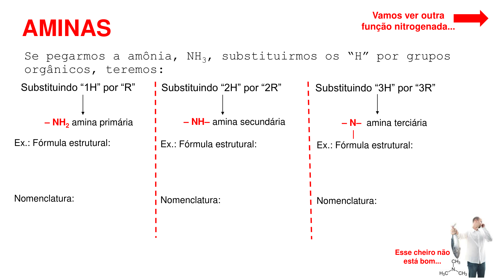
São bases (assim como a NH₃) porque o nitrogênio tem um par de elétrons livre. A cafeína, a adrenalina e as vitaminas do complexo B são aminas biologicamente importantes.
Amidas
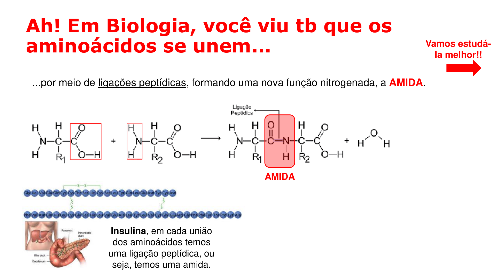
A ligação que une os aminoácidos nas proteínas é a ligação peptídica — uma amida formada entre o grupo –COOH de um aminoácido e o grupo –NH₂ do seguinte. A ureia [CO(NH₂)₂] é a amida mais simples e é o principal produto da excreção de nitrogênio em mamíferos.
Iminas
Possuem dupla ligação C=N. Diferem das aminas (que têm C–N simples). Formadas pela condensação de aminas primárias com aldeídos ou cetonas.
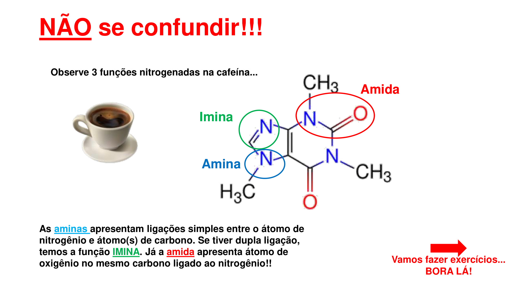
Cap. 14 Isomeria Plana
Isômeros planos (ou constitucionais) têm a mesma fórmula molecular, mas diferem na estrutura — ou seja, na sequência de ligações, sem considerar arranjo espacial.
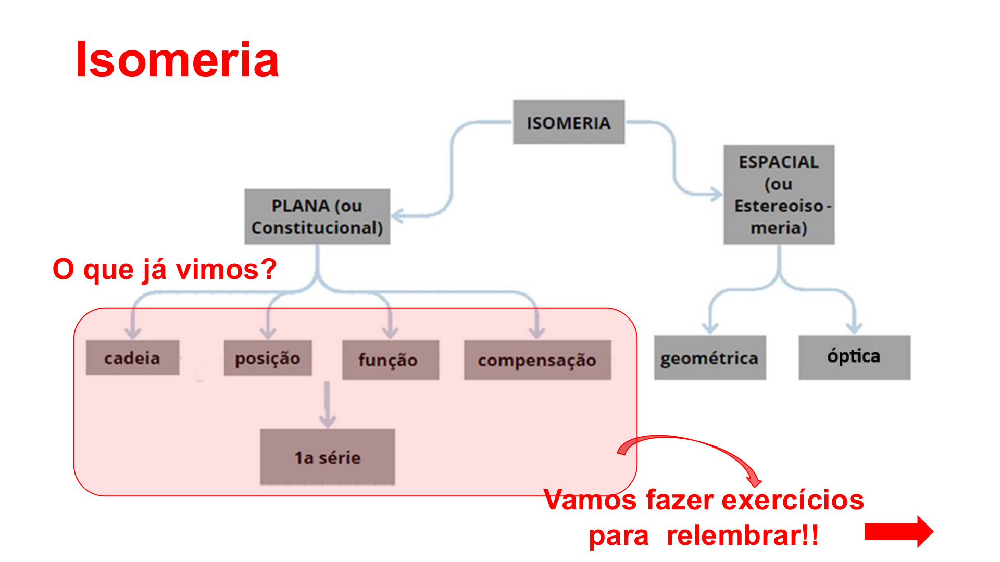
| Tipo | O que muda | Exemplo |
|---|---|---|
| Isomeria de Cadeia | O esqueleto da cadeia carbônica (ramificações, cadeias cíclica vs. aberta, posição de heteroátomo) | Butano (cadeia reta) × isobutano (ramificado) — ambos C₄H₁₀ |
| Isomeria de Posição | A posição de um mesmo grupo funcional ou insaturação na cadeia | But-1-eno × but-2-eno — ambos C₄H₈; propan-1-ol × propan-2-ol — ambos C₃H₈O |
| Isomeria de Função | O grupo funcional em si (funções diferentes) | Etanol (álcool) × metoximetano (éter) — ambos C₂H₆O; propanal × propanona — ambos C₃H₆O |
| Isomeria de Compensação (Tautomeria) | Equilíbrio dinâmico entre dois isômeros intercambiáveis espontaneamente em solução | Forma cetônica ⇌ forma enólica; bases nitrogenadas do DNA (adenina, guanina) |
A tautomeria ceto-enólica é o caso mais cobrado de isomeria de compensação. As duas formas existem em equilíbrio em solução:
- Forma cetônica: grupo carbonila C=O + H em carbono adjacente — mais estável na maioria dos casos
- Forma enólica: dupla C=C + grupo –OH (enol) — menos estável, mas forma reativa
A isomeria plana tem aplicação direta na indústria do petróleo. A gasolina é uma mistura de hidrocarbonetos C₅–C₁₂. O número de octano mede a resistência à detonação prematura (batida de pino).
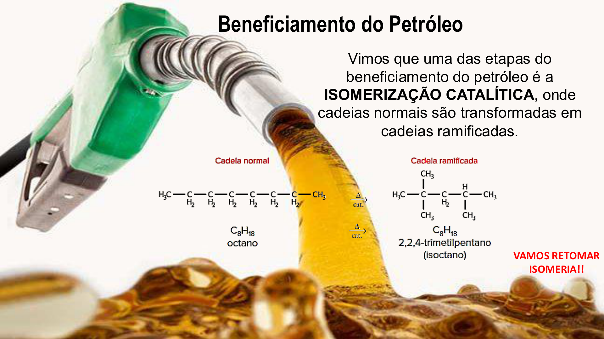
Outros exemplos industriais de isomeria de cadeia: n-butano (gás de cozinha) ⇌ isobutano (propelente em sprays aerossol), ambos C₄H₁₀.
Cap. 15 Isomeria Espacial
A isomeria geométrica (ou diastereoisomeria geométrica) ocorre quando a rotação livre em torno de uma ligação está impedida — principalmente em torno de duplas ligações C=C ou em anéis.
Condição necessária para alcenos
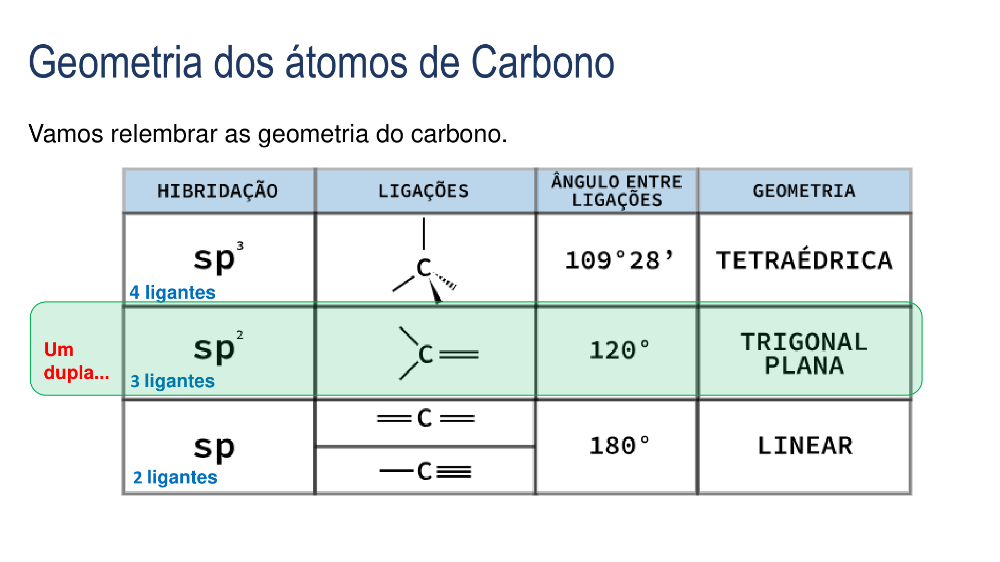
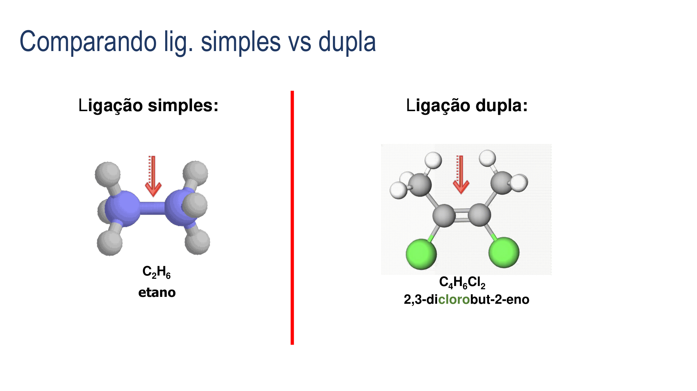
Cada carbono da dupla deve estar ligado a dois substituintes diferentes entre si. Se um carbono da dupla tiver dois substituintes iguais, não há isomeria geométrica.
- Cis: substituintes iguais (ou de maior prioridade) no mesmo lado da dupla
- Trans: substituintes iguais (ou de maior prioridade) em lados opostos da dupla
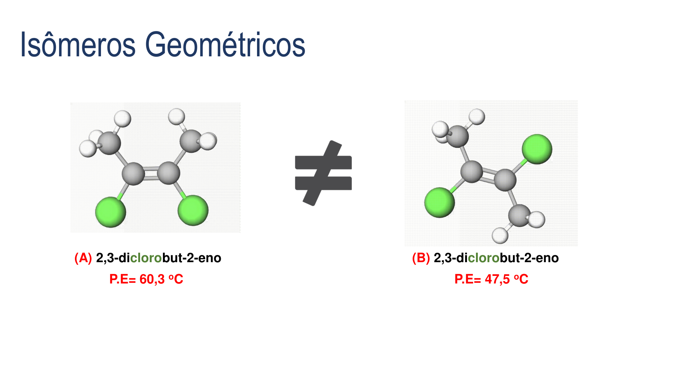
Exemplo clássico: 2-buteno (but-2-eno, C₄H₈)
- cis-but-2-eno: os dois grupos CH₃ no mesmo lado → molécula mais compacta, ponto de ebulição maior
- trans-but-2-eno: os dois grupos CH₃ em lados opostos → mais linear e simétrica
Nomenclatura Z/E (regras de Cahn-Ingold-Prelog)
Quando os quatro substituintes em torno da dupla são todos diferentes, o sistema cis/trans é ambíguo. Usa-se a nomenclatura Z/E:
- Em cada carbono da dupla, determine qual substituinte tem maior número atômico (Z atômico) — esse é o de maior prioridade.
- Z (do alemão Zusammen = "juntos"): os substituintes de maior prioridade estão no mesmo lado da dupla.
- E (do alemão Entgegen = "opostos"): os substituintes de maior prioridade estão em lados opostos da dupla.
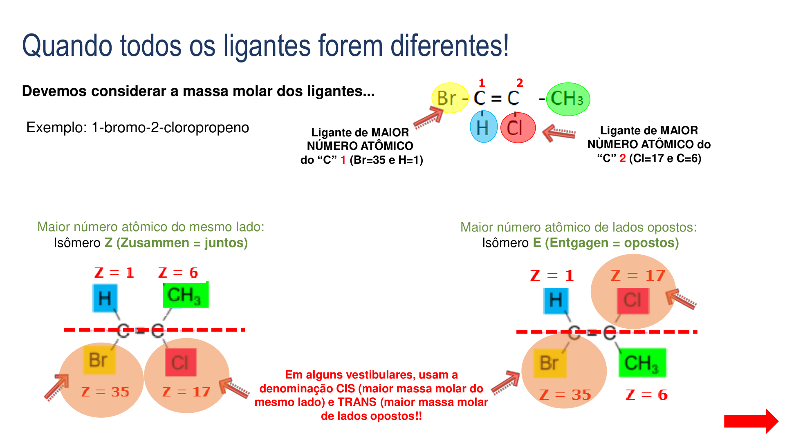
Isomeria Geométrica em Anéis
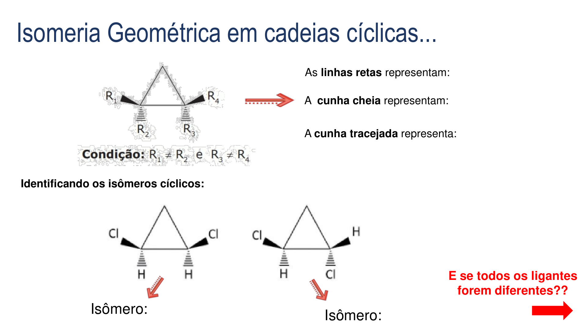
Em cadeias cíclicas (cicloalcanos), a rotação em torno das ligações C–C do anel também é restrita. Substituintes no anel podem estar:
- Cis: no mesmo lado do plano do anel (representados por cunha cheia ambos para frente, ou tracejada ambos para trás)
- Trans: em lados opostos do plano (um em cunha cheia, outro em tracejada)
Exemplo: 1,2-dimetilciclopropano — cis e trans são compostos distintos.
A isomeria óptica ocorre quando uma molécula não é sobreponível à sua imagem especular — como as mãos direita e esquerda.
Condição: Carbono Assimétrico (C*)
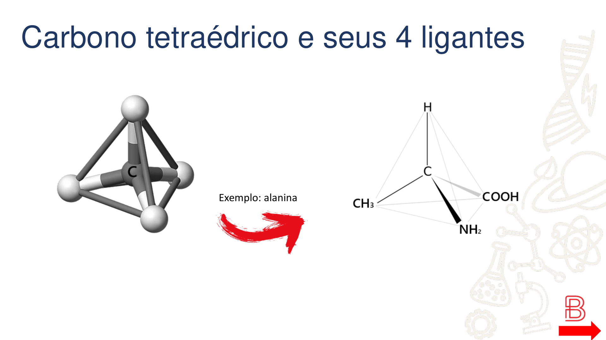
Um carbono assimétrico é um carbono sp³ ligado a quatro grupos todos diferentes entre si. O C* é o centro de quiralidade mais comum em química orgânica.
Enantiômeros
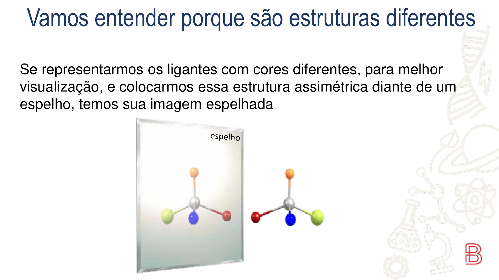
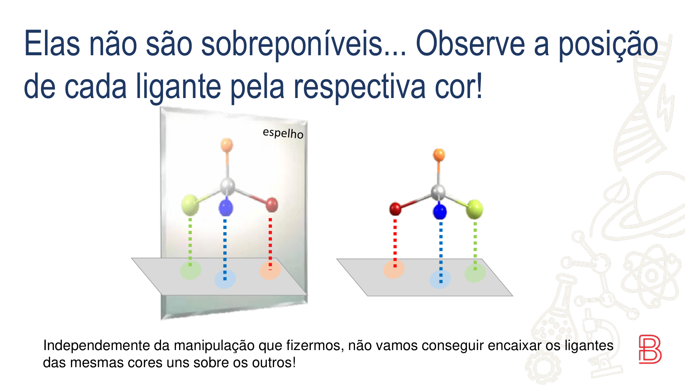
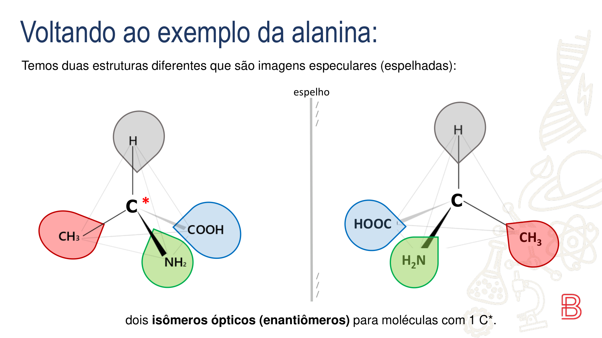
Enantiômeros são pares de estereoisômeros que são imagens especulares não sobreponíveis. Possuem propriedades físicas e químicas idênticas, exceto na interação com luz polarizada e com outros sistemas quirais (como enzimas e receptores biológicos).
- Dextrogiro (D+ ou +): desvia a luz polarizada para a direita
- Levogiro (L− ou −): desvia a luz polarizada para a esquerda
Mistura Racêmica
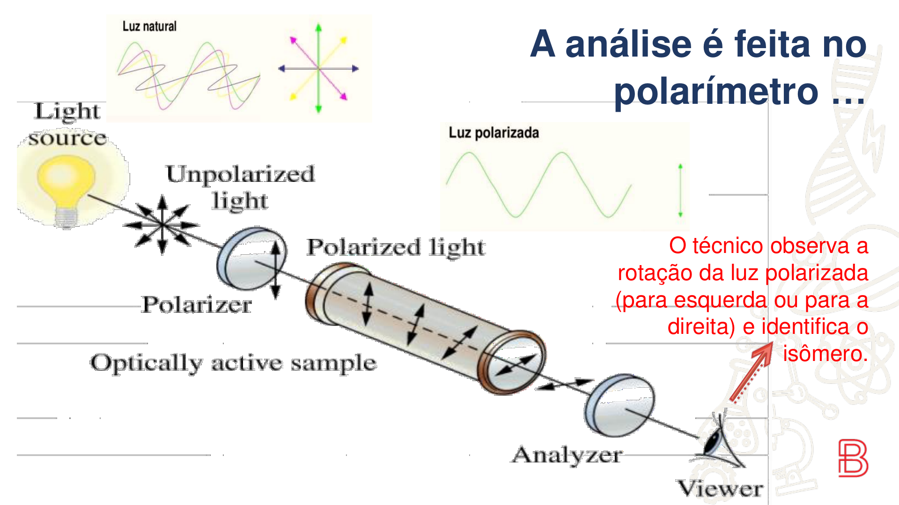
Uma mistura racêmica contém 50% de cada enantiômero. Como os efeitos de rotação da luz se cancelam, a mistura é opticamente inativa — não desvia a luz polarizada. Também chamada de mistura racêmica ou racemate.
- Enantiômero puro D+: desvia para a direita
- Enantiômero puro L−: desvia para a esquerda na mesma magnitude
- Mistura racêmica (50/50): sem desvio — opticamente inativa
Importância Farmacêutica
Em sistemas biológicos, enantiômeros interagem de forma diferente com proteínas, enzimas e receptores — que são quirais. Isso faz com que os dois enantiômeros de um fármaco possam ter efeitos completamente distintos.
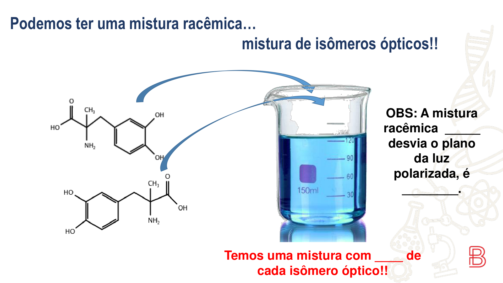
- Enantiômero R(+): efeito sedativo desejado
- Enantiômero S(−): teratogênico — causava má-formações graves no feto (focomelia)
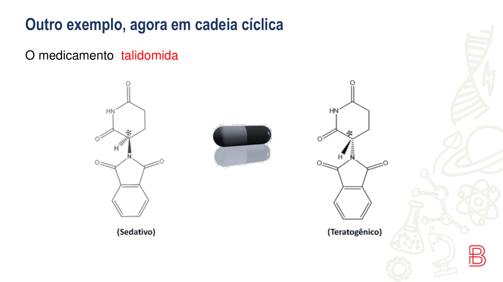
- R(+)-limoneno: cheiro de laranja
- S(−)-limoneno: cheiro de limão
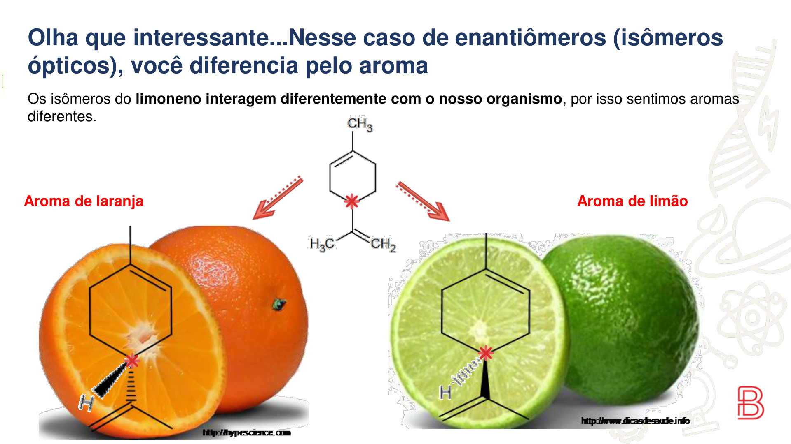
Quiz de Revisão
Teste seus conhecimentos sobre Funções Orgânicas e Isomeria.